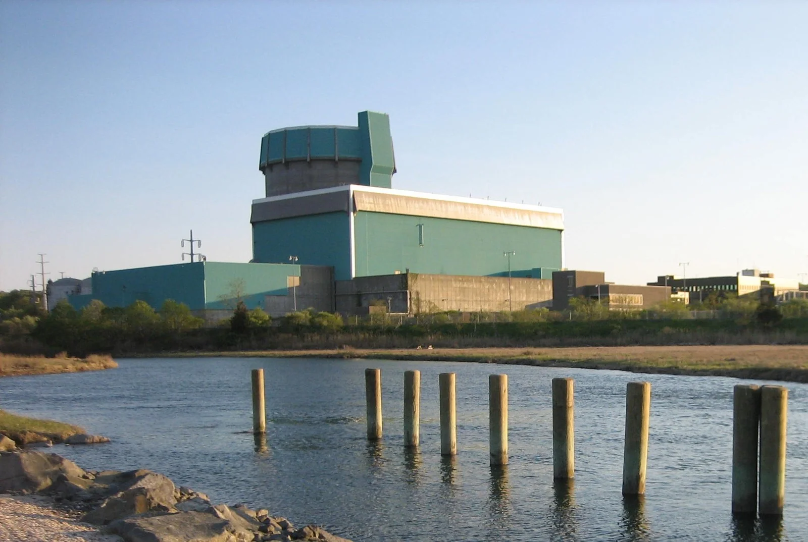
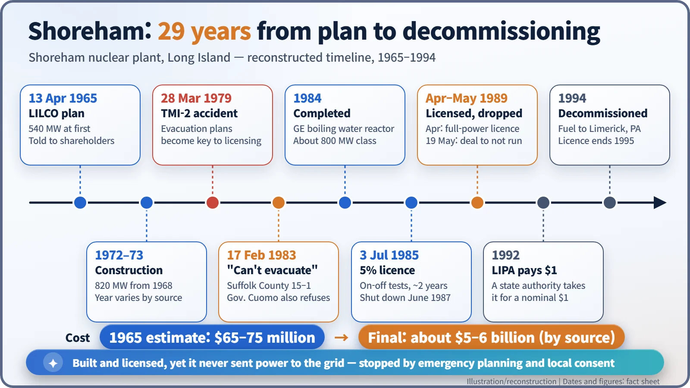
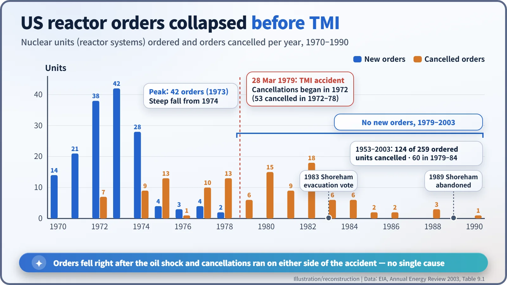
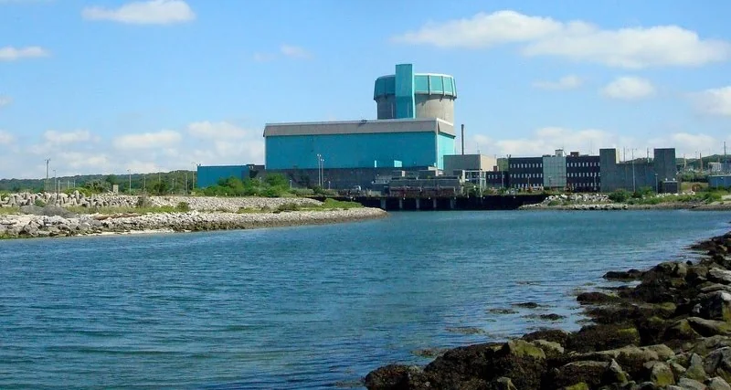

Nuclear History · 269
A Multibillion-Dollar Plant Sold for One Dollar — Shoreham and America's New-Build Drought
Stalled by a fight over whether an island could be evacuated, a plant that cost $5–6 billion was handed to a state authority for $1.
The Shoreham nuclear plant on Long Island cost its owner between $5 billion and $6 billion, was completed in 1984 and even received a full-power licence in 1989 — yet it never delivered commercial power. Blocked by a dispute over whether an island could be evacuated, it was handed to a state authority for $1 in 1992. Its story sits inside a wider one: US reactor orders had already collapsed before Three Mile Island, and no new reactor construction started between 1977 and 2013.
A plant sold for one dollar
One dollar. That was the nominal price paid in 1992 when the Long Island Power Authority (LIPA), a New York State public body, took over the Shoreham nuclear power plant. Building it had cost somewhere between $5 billion and $6 billion, depending on the source. The plant was finished, and it was even licensed for full power, yet it never delivered commercial power to the grid. What kept its "on" switch from ever being thrown? [3] [4] [7]

A $70 million dream
On 13 April 1965, John J. Tuohy, president of the Long Island Lighting Company (LILCO), told shareholders that the utility would build a nuclear plant at Shoreham, on the north shore of Long Island, the long island stretching east from New York City. The plan was for a 540-megawatt (MW) unit, estimated to cost $65–75 million. [7]
In 1968 the design was uprated to 820 MW, and construction began in 1972 or 1973 (sources differ). The reactor was a General Electric boiling water reactor, the type in which water boils directly inside the reactor to drive the turbine. But in an era of high interest rates and rising prices, the work dragged on and the bill kept climbing.
Where do you run on an island?
The Three Mile Island (TMI) accident in March 1979 changed everything. That June, about 15,000 protesters gathered at Shoreham, in what was reported as the largest demonstration in Long Island's history. The following year the US Nuclear Regulatory Commission (NRC) adopted a rule making off-site emergency plans, including evacuation plans for the roughly 10-mile (16 km) emergency planning zone around a plant, part of the decision on an operating licence. [6]
On Long Island, that rule turned into a hard question. The island is long and narrow, and in an emergency traffic would have to head west, towards New York City. On 17 February 1983 the Suffolk County Legislature voted 15 to 1 that the county could not be safely evacuated. Governor Mario Cuomo (1932–2015) then ordered state officials not to approve any evacuation plan sponsored by LILCO. Whether a plan drawn up without the state and county could work became the subject of a long legal fight. [5] [7]
Finished, but never switched on
The plant was completed in 1984. On 3 July 1985 the NRC granted a low-power licence allowing operation at no more than 5% of rated power, and the reactor was tested intermittently for about two years before it shut down in June 1987. In September 1985, Hurricane Gloria left parts of the island without power for more than ten days, and public confidence in the utility suffered further. [5] [7]
In late February 1989, Governor Cuomo and LILCO announced an agreement to hand the plant to a state authority for $1 and dismantle it. Then, in April, the NRC issued a full-power operating licence anyway. One New York newspaper compared it to "throwing a bon voyage party for the Titanic six weeks after it hit the iceberg." On 19 May 1989, LILCO formally agreed not to operate the plant. [3] [4]

LIPA took over the plant for $1 in 1992. The fuel went to the Limerick nuclear plant in Pennsylvania, and decommissioning was completed in 1994. Most of the cost ended up on the electricity bills of Long Island customers. LILCO and the NRC considered the plant safe; opponents argued that evacuation from an island was simply not workable. Shoreham was the place where those two judgements never met. [7]
Not just Shoreham's story
Seeing Shoreham only as "the plant TMI stopped" tells half the story. Figures from the US Energy Information Administration (EIA) show annual reactor orders peaking at 42 in 1973 and falling steeply from 1974. Cancellations were already piling up between 1975 and 1978, driven largely by slower growth in electricity demand, high interest rates and soaring construction costs. From 1979 there were no new orders at all, and of the 259 units ordered since 1953, 124 were eventually cancelled. [1]

| Period | New orders | Cancelled orders |
|---|---|---|
| 1972–1978 (before TMI) | 121 | 53 |
| 1979–1984 | 0 | 60 |
| All years, 1953–2003 | 259 | 124 |
According to the World Nuclear Association, the United States saw no new construction starts from 1977 until 2013. Plants already approved were completed one by one, and when Watts Bar 1 started operating in 1996, the long twentieth-century build-out came to an end. [2]

In 2004, at a ceremony for wind turbines erected on the site, LIPA chairman Richard Kessel called the building "a modern-day Stonehenge, a multibillion-dollar monument to a failed energy policy." Whatever one's verdict, Shoreham showed that a nuclear plant does not run on technology alone. Emergency planning and the consent of the community turned out to be its last, indispensable component. [7]